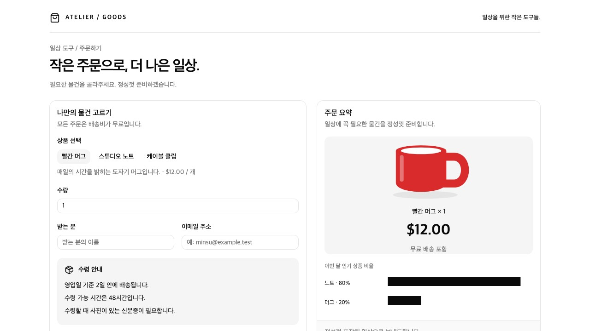
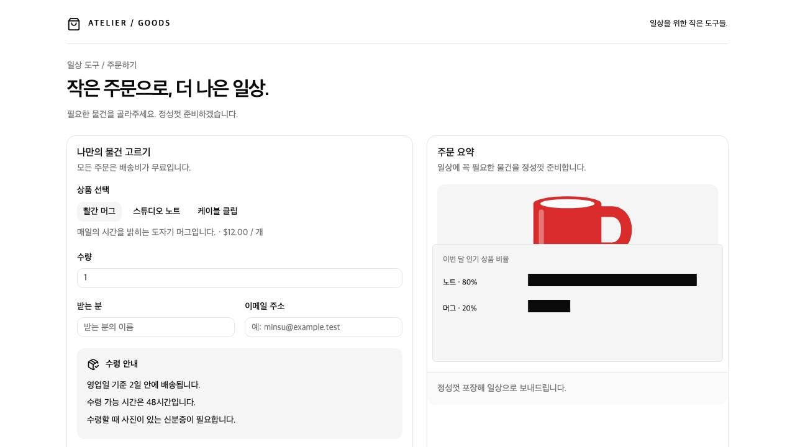

같은 30B 모델 · 실제 저장 화면 · 정답/기준 이미지 없음
기존 자동 평균 11.55초 → 생성 속도 우선 7.71초. 보고 비용은 약15% 증가했습니다. 개별 역전도 있었고 전체 주문 개선율을 뜻하지 않습니다.

4회 모두 후보 없음.

두 설정에서 각각2회 모두 미탐. 원응답부터 가림 없음이라고 판단했습니다.
별도 경계 관찰 지시4회 시험도 잘못된 요소 관계와 정상 차트 오류를 주장하여 채택하지 않았습니다. 겹침 검출은 미해결입니다.
총12요청 · 보고 비용 $0.00958972. Windows 실환경 속도는 미검증.